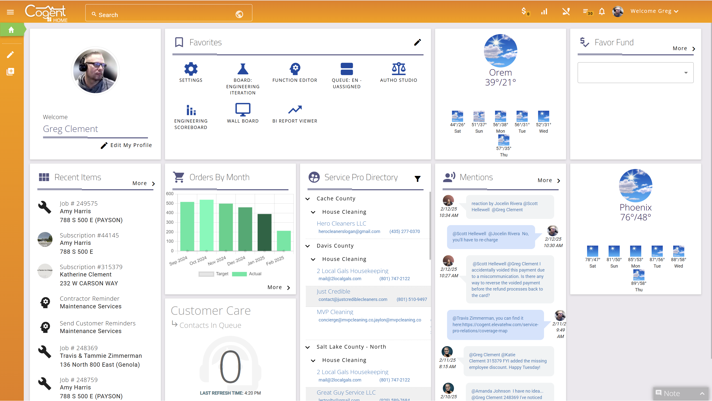

<div aflex>
    <div></div>
    <div nogrow>
        <button mat-button style="color: #fff;" id="open-coms" (click)="communicationOpen = !communicationOpen">
            <mat-icon>message</mat-icon>
        </button>
    </div>
</div>

<div id="communication-panel" *ngIf="communicationOpen">

    <div aflex>
        <div>
            <h2 class="sub-heading" style="margin-top: 10px !important;margin-left: 10px !important;">Communications
            </h2>
        </div>
        <div nogrow>
            <button mat-button mat-raised-button class="new-communication-button" color="primary"
                [matMenuTriggerFor]="menu">
                <mat-icon>add</mat-icon>
            </button>
        </div>
    </div>

    <mat-menu #menu="matMenu">
        <button mat-menu-item>
            <mat-icon>sms</mat-icon>
            SMS Text
        </button>
        <button mat-menu-item>
            <mat-icon>email</mat-icon> Email
        </button>
        <button mat-menu-item>
            <mat-icon>phone</mat-icon> Phone Call
        </button>
        <button mat-menu-item>
            <mat-icon>voicemail</mat-icon> Voice Chat
        </button>
        <button mat-menu-item>
            <mat-icon>record_voice_over</mat-icon> Task
        </button>
        <button mat-menu-item>
            <mat-icon>note</mat-icon> Note
        </button>
    </mat-menu>
    <button style="height: unset;" mat-button class="communication-item toggle-button" [class.bold]="communication.isNew"
        [class.selected]="selectedCommunication === communication" (click)="selectedCommunication = communication"
        *ngFor="let communication of communications">

        <div aflex>
            <div nogrow class="from-box">
                

                <div class="communication-type-container" [class.no-avatar]="!communication.fromId">
                    <mat-icon class="communication-type" [class.no-avatar]="!communication.fromId">
                        {{communication.cssClass}}</mat-icon>
                </div>
                <br>
                <span class="small">{{communication.from}}</span>
            </div>
            <div class="communication-text">

                {{communication.text}}
                <br>
                <span class="badge">{{communication.threadCount}}</span>

            </div>
            <div nogrow class="date">
                {{communication.createdDate | date: 'shortDate'}} <br> {{communication.createdDate | date: 'shortTime'}}
            </div>
        </div>
    </button>
</div>